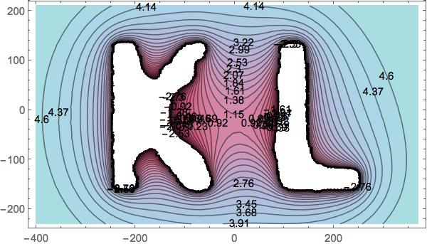

ABOUT
RESEARCH
TEACHING
CONFERENCES
GALLERY
OTHER
Seminars:
Boston College
Geometry/Topology/Dynamics Seminar
Boston College
Math & Machine Learning Seminar
This 'n That:
I'm on advisory board for the
AMS Mathematics Research Communities
. I benefited from participating in two MRC programs as a student.
Dynamical Roots
, a public lecture.
I organized a year-long series of events about
Women in STEM
at BC during the 2018-2019 academic year funded by a grant from the
ILA
.
AWM: I am a co-founder and former president of the
Cornell Student Chapter of the Association for Women in Mathematics
. The Cornell Chronicle made this
video
of our 2012 Pi Day pie-eating contest.
Math Explorers Club: The
Math Explorers Club
is a collection of materials designed to give middle school and high school students an introduction to interesting and advanced topics in mathematics. I wrote the module
An Introduction to Tilings
.
Who Wants to Be a Mathematician? I made a
cameo appearance
in the 2015 AMS production of "
Who Wants to Be a Mathematician?
"
I make
pottery
.
Mentors:
John Hubbard
(graduate school)
John Smillie
(phd advisor)
Cesar Silva
(undergrad advisor)
William Thurston
(graduate school)
Amie Wilkinson
(postdoc mentor)